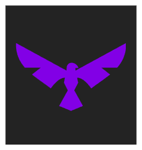
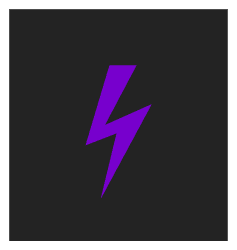

TotumOS. Simple, Elegant, Private.
TotumOS aims to be simple, intuitive, and privacy-focused, whilst providing powerful tools,
enabling users to have complete control over their system.

Simple
Totum uses the Falcon Desktop environment, designed by the Xenox Project to be streamlined, simple and productive.

Streamlined
Totum is Designed to be distraction free, allowing users to be even more productive.
Powerful
Totum is Unix Like, comes with a powerful bash terminal, and tools like vim pre-installed.